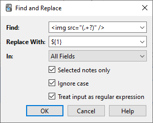

Навігатор
- Режими таблиці
- Бічна панель
- Рядок пошуку
- Таблиця карток/нотаток
- Область Редагування
- Меню та дії
- Знайти та замінити
- Знаходження дублікатів
Вікно Навігатор дозволяє шукати картки та нотатки, а також редагувати їх. Воно відкривається натисканням кнопки Навігатор у головному вікні або натисканням B. Вікно складається з трьох частин: бічної панелі зліва, таблиці карток/нотаток у верхньому правому куті та області редагування у нижньому правому куті. Наводячи курсор миші між двома секціями, можна натиснути та перетягнути, щоб розширити одну секцію та зменшити іншу.
Режими таблиці

Anki версії 2.1.45+ пропонує два режими: у таблиці даних можуть відображатися або картки, або нотатки. Ви можете змінити поточний режим, натиснувши перемикач угорі ліворуч від області пошуку чи Ctrl+Alt+T або Cmd+Opt+T. Перемикач показує, що наразі відображаються: Картки чи Нотатки.
Примітка: Для спрощення у цьому посібнику зазвичай припускається, що активний режим — це Режим карток. Коли згадується вибір/пошук/тощо "карток", читач може замінити це на "картки або нотатки залежно від активного режиму".
Бічна панель
Бічна панель ліворуч забезпечує швидкий доступ до поширених пошукових термінів. У Anki версії 2.1.45+ вона також містить рядок пошуку, інструменти для редагування міток і колод, а також вибір між двома різними інструментами, які обговорюються в наступних розділах. Ви можете перемикати інструменти за допомогою панелі інструментів у верхній частині бічної панелі або комбінаціями клавіш Alt+1/2.
Інструмент пошуку

З цим інструментом бічна панель працює, як і в попередніх версіях: клацання на елемент запускає пошук.
Ви можете утримувати Ctrl (Command на Mac), натискаючи елемент, щоб додати його до поточного пошуку з умовою AND, замість того, щоб починати новий пошук. Наприклад, щоб показати картки у процесі навчання, які також знаходяться в колоді "Німецька", ви можете клацнути "Навчання", а потім натиснути Ctrl і клацнути "Німецька".
Утримуючи Shift, можна створити пошук за умовою OR замість AND. Наприклад, ви можете вибрати одну колоду, а потім натиснути Shift і вибрати іншу, щоб показати картки з обох колод у тому ж перегляді.
Утримуйте Alt (Option на Mac), щоб інвертувати пошук (додати префікс -): наприклад, щоб показати всі картки в поточній колоді, які не мають певної мітки. Alt/Option можна комбінувати з Ctrl або Shift (наприклад, натискання з Ctrl+Alt призведе до додавання нового інвертованого пошукового терміну).
У Anki 2.1.39+ можна також утримувати одночасно Ctrl і Shift, натискаючи пошуковий термін, щоб замінити всі входження такого типу пошуку новим.
Наприклад, якщо ви раніше ввели складний пошуковий запит, як-от deck:Swahili (is:due or tag:important), і тепер хочете виконати такий самий пошук для колоди "Urdu", утримуйте Ctrl+Shift, натискаючи на колоду "Urdu" в бічній панелі, щоб отримати наступний пошуковий запит: deck:Urdu (is:due or tag:important).
Інструмент вибору

Інструмент вибору дозволяє вибрати кілька елементів одночасно, утримуючи Ctrl або Shift під час клацання. Він також дозволяє перетягувати і змінювати порядок колод і міток.
Ось приклад: скажімо, у вас є мітки Math, Calculus і Algebra. Клацніть на мітку Calculus, потім утримуючи Ctrl, клацніть на мітку Algebra. Тепер обидві мітки вибрані, перетягніть одну з них на мітку Math, щоб зробити їх обидві підпорядкованими цій мітці. За лаштунками Anki перейменувала дві мітки на Math::Calculus і Math::Algebra і оновила ваші нотатки відповідно.
Ще один випадок використання для вибору кількох елементів - це пошук: якщо ви натискаєте праву кнопку миші на вибраних елементах, ви можете вибрати Пошук > Усі/Будь-які вибрані. Це можна комбінувати з клавіатурними модифікаторами, як описано в Інструменті пошуку, щоб додати результативний пошук до поточного пошуку.
Збережені пошуки
Якщо ви регулярно шукаєте одне і те ж саме, можете зберегти поточний пошук, клацнувши правою кнопкою миші на верхньому елементі в бічній панелі, вибравши “Зберегти поточний пошук” і ввівши назву. Ви також можете перетягнути будь-який елемент бічної панелі в цю область, щоб додати еквівалентний збережений пошук, фактично закріплюючи його вгорі.
Редагування елементів
Ви можете видаляти або перейменовувати теги, колоди та збережені пошуки безпосередньо з бічної панелі, скориставшись контекстним меню (права кнопка миші) або комбінацією клавіш (Del та F2 на Windows). Видалення також працює для кількох елементів одночасно (див. Інструмент вибору).
Пошук елементів
Щоб знайти певний елемент у дереві бічної панелі, введіть частину його назви в рядок пошуку нагорі, щоб тимчасово приховати всі елементи, які не відповідають запиту.
Рядок пошуку
Над списком карток розташований рядок пошуку. Ви можете вводити різні запити для пошуку карток. Для отримання інформації про синтаксис пошуку дивіться Пошук.
Таблиця карток/нотаток
Рядки таблиці представляють картки або нотатки, які відповідають поточному пошуковому запиту. Коли ви натискаєте на рядок, відповідна нотатка відображається в нижній частині вікна.
Рядки
Якщо ви перетягуєте мишу або утримуєте Ctrl чи Command для вибору кількох рядків, редактор тимчасово приховується. Різні операції (наприклад, зміна колоди) можуть застосовуватися до кількох карток або нотаток одночасно, незалежно від активного режиму. Тому в режимі Карток, нотатка вважається вибраною, якщо вибрано хоча б одну з її карток, а в режимі Нотаток, картка вважається вибраною, якщо вибрано її нотатку.
Інші операції (наприклад, відображення інформації про картку) застосовуються лише до однієї картки або нотатки. Це називається поточна картка або нотатка, яка зазвичай є останньою вибраною або натиснутою. У режимі Карток поточна нотатка — це нотатка поточної картки, а в режимі Нотаток, поточна картка — перша картка поточної нотатки.
Колір фону змінюватиметься залежно від картки та нотатки. У режимі Карток використовується перша відповідність:
- якщо картка помічена прапорцем, використовується колір прапорця,
- якщо картка призупинена, жовтий колір,
- якщо нотатка картки помічена, фіолетовий колір.
У режимі Нотаток колір застосовується лише до помічених нотаток.
Для отримання додаткової інформації про помічені нотатки та призупинені картки, див. Редагування та інше.
Стовпці
Налаштування стовпців: клацніть правою кнопкою миші (або Ctrl-клік на Mac), щоб вибрати, які стовпці бажаєте бачити. Можете перетягувати стовпці для зміни їх порядку. Натискання на стовпець сортуватиме за цим стовпцем; натисніть ще раз, щоб змінити порядок сортування на зворотний. Зверніть увагу, що ви не можете сортувати за стовпцями Питання та Відповідь.
Усі стовпці доступні як для режиму Карток, так і для Нотаток, але іноді з дещо іншими назвами та даними. У наступній таблиці наведено поведінку для обох режимів.
| Стовпець | Режим Карток | Режим Нотаток |
|---|---|---|
| Відповідь | Зворотна сторона картки в один рядок із видаленим питанням. Ви також можете вибрати індивідуальний формат в редакторі типу картки. | Те саме, що і в режимі Карток, лише для першої картки нотатки. |
| Картка(и) | Назва шаблону картки. | Кількість карток, що має нотатка. |
| Змінено Картку | Останній раз, коли вносилися зміни до картки (наприклад, коли ви переглядали картку, і історія перегляду та інтервал були оновлені). | Останній раз, коли вносилися зміни до однієї з карток нотатки. |
| Створено | Те саме, що і в режимі Нотаток для картки нотатки. | Дата створення нотатки. |
| Колода | Назва колоди, в якій знаходиться картка. | Кількість різних колод, в яких знаходяться картки нотатки, або назва колоди, якщо всі картки знаходяться в одній колоді. |
| Термін | Дата карток у режимі повторення або вивчення/перегляду та позиція в черзі для нових карток. Рядок обгортається в дужки, якщо картка призупинена або прихована. Сортування виконується за типом, а потім за датою або позицією. | Дата показу наступної картки нотатки для режиму повторення або вивчення/перегляду, яка не є призупиненою, прихованою або відфільтрованою у колоді. |
| (Середн.) Складність | Складність картки, якщо вона не нова. | Середнє значення складності карток нотатки, які не є новими. |
| (Середн.) Інтервал | Інтервал картки, якщо картка знаходиться в режимі повторення або повторного вивчення. | Середній інтервал карток нотатки, які знаходяться в режимі повторення або повторного вивчення. |
| Помилки | Як часто картка оцінювалася як "Знову". | Загальна кількість помилок для всіх карток нотатки. |
| Нотатка | Те саме, що і в режимі Нотаток для нотатки. | Назва типу нотатки. |
| Змінено Нотатку | Те саме, що і в режимі Нотаток для нотатки. | Останній раз, коли редагувалася нотатка (наприклад, вміст поля). |
| Питання | Лицьова сторона картки в один рядок. Ви також можете вибрати власний формат в редакторі типу картки. | Те саме, що і в режимі Карток, лише для першої картки нотатки. |
| Перегляди | Як часто картка переглядалася. | Загальна кількість переглядів для всіх карток нотатки. |
| Поле Сортування | Те саме, що і в режимі Нотаток для нотатки. | Вміст поля нотатки, яке визначено як поле сортування типу нотатки. Тільки це поле можна відображати і сортувати за ним. Ви можете змінити поле сортування, натиснувши Поля... в області редагування. |
| Теги | Те саме, що і в режимі Нотаток для нотатки. | Теги нотатки. |
Область Редагування
У правій нижній частині відображається нотатка вибраного рядка. Для отримання додаткової інформації про картки та нотатки див. Початок роботи. Для отримання додаткової інформації про кнопки форматування див. Редагування.
Ви можете переглянути попередній вигляд вибраної картки під час перегляду, натиснувши кнопку Попередній перегляд у верхній частині області редагування. Зверніть увагу, що це не відображатиме поля для введення відповіді, що полегшує швидкий перегляд. У режимі Нотаток попередній перегляд показується для першої картки вибраної нотатки.
Меню та дії
У верхній частині вікна перегляду знаходиться панель інструментів з різними меню, які, у свою чергу, пропонують різноманітні дії, які можна виконувати в переглядачі.
Редагування
| Назва | Дія |
|---|---|
| Скасувати | Скасувати останню виконану операцію. |
| Виділити все | Виділити всі відображені рядки. |
| Виділити нотатки | Показати лише обрані нотатки та виділити всі рядки. |
| Інвертувати вибір | Вибрати ті рядки, які не були обрані, та зняти виділення з поточно виділених рядків. |
| Створити фільтровану колоду | Відкрити діалог фільтрованої колоди і встановити поточний пошук у перегляді як фільтр. Використовуйте Alt / Option для встановлення другого фільтра (потрібен планувальник версії 2+). |
Нотатки
Більшість наступних дій застосовуються до обраних нотаток. Вони також доступні через контекстне меню, якщо клацнути правою кнопкою миші по вибраному рядку в режимі Нотаток. У режимі Карток ці дії можна знайти в підменю контекстного меню.
| Назва | Дія |
|---|---|
| Додати нотатки | Відкрити діалогове вікно Додати. |
| Створити копію | Відкрити дублікат поточної нотатки в редакторі, яку можна трохи змінити, щоб швидко отримати варіації карток. Усталено дублікат буде створено в тій самій колоді, що й оригінал. |
| Експортувати нотатки | Відкрити діалогове вікно Експорт. |
| Додати теги | Додати задані теги до всіх обраних нотаток. |
| Видалити теги | Ввести теги та видалити їх з усіх обраних нотаток. |
| Очистити невикористані теги | Видалити всі теги, які не використовуються жодною нотаткою, з бічної панелі. |
| Перемкнути мітку | Якщо поточна нотатка позначена (тобто має тег Marked), зняти позначку з усіх обраних нотаток. Якщо не позначена, позначити всі обрані нотатки. |
| Змінити тип нотатки | Перетворити вибрані нотатки з одного типу на інший. Наприклад, уявіть, що у вас є тип нотаток Russian та Computer, і ви випадково додали комп'ютерний текст до нотатки Russian. Ви можете скористатися цією опцією для виправлення помилки. Планування карток не змінюється. Зміна типу нотатки потребує односторонньої синхронізації. |
| Знайти дублікат | Відкрити діалогове вікно Дублікати. |
| Знайти та замінити | Відкрити діалогове вікно Знайти та замінити. |
| Керувати типами нотаток | Відкрити діалогове вікно Типи нотаток. |
| Видалити | Видалити всі вибрані нотатки та їхні картки. Видалити окремі картки неможливо, оскільки ними керують шаблони. |
Картки
Наступні дії виконуються з поточними вибраними картками. Вони також доступні через контекстне меню, якщо вибраний рядок клацнути правою кнопкою миші в режимі карток. У режимі нотаток їх можна знайти в підменю контекстного меню.
| Назва | Дія |
|---|---|
| Змінити колоду | Перемістити поточні вибрані картки до іншої колоди. |
| Встановити дату | Перетворити картки на картки для повторення та зробити їх актуальними на певну дату. Це може бути корисним для пересування дат карток на кілька днів вперед або назад, коли навчальний графік порушено. Введення діапазону, як-от 60-90, зробить вибрані картки актуальними через 60-90 днів починаючи від сьогоднішнього. Нові картки матимуть свій інтервал, встановлений на той самий термін, але повторення буде перенесено без зміни поточного інтервалу, якщо '!' не включено в кінці діапазону. (Зверніть увагу, що час відповіді не фіксується при ручному плануванні карток, оскільки цю дію можна виконувати навіть поза переглядом, і Anki не знає, яка картка може бути показана на даний момент, а яка ні.) |
| Забути | Перемістити поточні вибрані картки в кінець черги з нових. Існуюча історія повторень зберігається. У версії 2.1.50+ є параметри для відновлення початкової позиції картки та для скидання лічильників повторів і помилок. |
| Змінити позицію | Змінити порядок, у якому з’являтимуться нові картки. Ви можете дізнатися про існуючі позиції, увімкнувши стовпець актуальні, як описано в розділі таблиця вище. Якщо запустити команду змінення позиції, коли вибрано кілька карток, вона застосовуватиме зростаючі числа до кожної картки по черзі. Типово число збільшується на одиницю для кожної картки, але це можна налаштувати, змінивши налаштування "кроків". Опція Зсув позиції існуючих карток дозволяє вставляти картки між поточними, розсовуючи існуючі. Наприклад, якщо у вас є п’ять карток, і ви хочете перемістити 3, 4 і 5 між 1 і 2, вибір цього параметра призведе до того, що картки опиняться в порядку 1, 3, 4, 5, 2. І навпаки, якщо вимкнути цю опцію, 1 і 2 отримають однаковий номер позиції (отже, стане непередбачуваним, яка з карток з однаковим номером з’явиться першою). Зверніть увагу, що коли ця опція увімкнена, будь-яка картка з вищою позицією буде змінена, і всі ці змінені картки потрібно буде надіслати під час наступної синхронізації. |
| Призупинити | Призупинити або відновити всі обрані картки, залежно від того, чи призупинено поточну картку. |
| Прапорець | Змінити прапорець усіх вибраних карток. Чи буде прапорець додано чи знято, залежить від того, чи має поточна картка вибраний прапорець. |
| Інформація | Показати різну інформацію про поточну картку, включно з історією повторень. Докладніше див. Інформація про картку. |
Перейти
Це меню існує для надання клавіатурних скорочень для переходу до різних частин браузера та для переміщення вгору та вниз у списку карток.
Знайти та замінити
Цей діалог дозволяє замінювати текст у нотатках. Як описано вище, він доступний з панелі інструментів та з контекстного меню таблиці.
Перше текстове поле призначене для тексту, який буде замінено, друге – для заміни. Далі йде спадне меню, яке дозволяє вказати, де саме Anki має шукати текст для заміни: у тегах нотатки (з Anki версії 2.1.45+), у всіх або тільки у певному полі (будуть перелічені тільки поля, що належать до вибраної нотатки).
Усталено будуть змінені лише вибрані нотатки. Якщо бажаєте зняти це обмеження, можете зняти прапорець "тільки вибрані нотатки" (з Anki 2.1.45+).
Опція регулярних виразів дозволяє виконувати складні заміни. Наприклад, припустимо, що в полі є наступний текст:
<img src="pic.jpg" />
Використовуємо ці налаштування:

(Примітка: у версіях Anki до 2.1.28 потрібно буде замінити ${1} на \1.)
Тоді вміст поля зміниться на:
pic.jpg
Повне обговорення регулярних виразів виходить за межі цього документа. Існує безліч посібників з синтаксису, доступних в Інтернеті:
- Для Anki 2.1.28+ дивіться https://docs.rs/regex/latest/regex/index.html#syntax.
- Для старіших версій Anki дивіться http://docs.python.org/library/re.html.
Знаходження дублікатів
Знайти Дублікати
Використовуйте опцію Нотатки > Знайти дублікати, щоб знайти нотатки з однаковим вмістом. Коли відкриваєте це вікно, Anki перегляне всі типи нотаток і надасть список усіх можливих полів. Якщо бажаєте шукати дублікати в полі Back, виберіть його зі списку та натисніть Пошук.
За замовчуванням буде здійснено пошук серед нотаток усіх типів, які мають вказане поле. Це відрізняється від перевірки на дублікати при додаванні карток вручну, яка обмежена лише одним типом нотаток.
Поле Додатковий фільтр дозволяє звузити область пошуку дублікатів. Якщо бажаєте шукати дублікати лише в типах нотаток "French Vocab" і "French Verbs", введіть:
"note:french vocab" or "note:french verbs"
Або, можливо, бажаєте шукати дублікати лише в певній колоді, тому можете скористатися:
"deck:myDeck"
Синтаксис пошуку той самий, що і при пошуку в браузері. Для отримання додаткової інформації дивіться Пошук.
Ви можете натиснути на одне з посилань у переліку результатів пошуку, щоб відобразити дублікати нотаток у цьому наборі. Якщо пошук виявив велику кількість дублікатів, можливо натиснути Тег дублікат, яка додасть тег дублікат до всіх відповідних нотаток. Потім можете шукати цей тег у браузері та обробити всі дублікати на одному екрані.